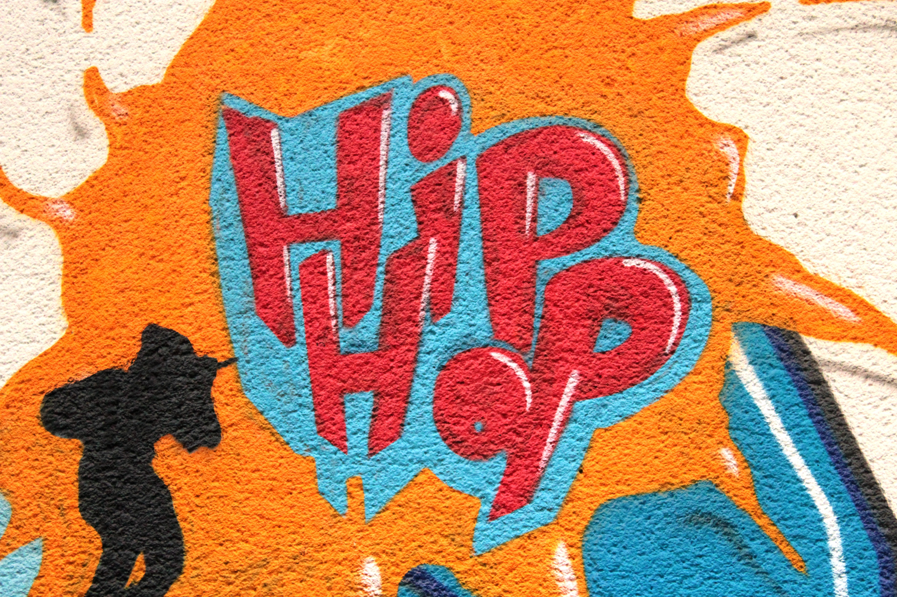

대중 음악의 한 장르를 일컫는 말인 동시에, 문화 전반에 걸친 흐름을 가리키는 말이기도 하다. 힙합이란 말은 ‘엉덩이를 흔들다’는 말에서 유래했다. 당초에는 1970년대 후반 뉴욕 할렘가에 거주하는 흑인이나 스페인계 청소년들에 의해 형성된 새로운 문화운동 전반을 가리키는 말이었다. 따라서 힙합을 '미국에서 독자적으로 만들어진 유일한 문화'라고 평하기도 한다. 힙합을 이루는 요소로는 주로 네 가지, 랩·디제잉·그라피티·브레이크댄스가 거론된다. [네이버 지식백과] 힙합 [Hip Hop] (두산백과)
1980년대 빌보드 팝 음악계는 블루스, 재즈, R＆B, 펑키(Funky) 등 흑인들에게 뿌리를 둔 음악 장르가 다채로운 문화들과 만나 활짝 꽃을 피운 시기였다. 마틴 루터 킹(Martin Luther King Jr.) 목사가 워싱턴 평화 대행진에서 흑인의 인권을 위해 연설한지 근 20년의 세월이 흘렀지만, 미국 사회에서 인종 평등이 이루어지기에는 여전히 넘어야 할 산들이 많았다. 1970년대 후반 뉴욕 맨해튼 부근의 브롱스와 할렘 지역은 빈민가가 되어 있었고, 이곳에는 많은 흑인들과 이민자의 후손들이 터를 잡고 살았다. 흑인들은 오랜 시간 동안 사회적으로 억압받고, 물질적으로도 풍요롭지 못했으며, 이를 자신들의 감정과 생각으로 표현하며, 1980년대 이후 힙합(Hip Hop)이라는 거대한 문화 현상을 만들어냈다 [네이버 지식백과] 힙합 [Hip Hop] - 흑인 음악의 표현주의 (팝 음악, 이진섭)